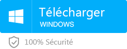

SafeCode
SafeCode est un petit logisiel portable qui permet de cacher
un dossier windows et le protégée par un mot de pass. SafeCode
est très simple d'utilisation. Il fonctionne sur windows
seulement. De plus SafeCode est totalement gratuit!
Pour instaler SafeCode sur votre clé usb ou ordinteur vous
devez dabort décompresser le dossier .zip Quand le fichier est
décompresser plasser le fichier nommer SafeCode a l'endrois
que vous vouler créé un dossier secret et ouver le. Il va créé
automatiquement un dossier nomer SafeCode mettez les fichiers
a cacher a l'interieur du dossier SafeCode quand vous
réouvrirez l'application entre le mot de pass qui est dans le
fichier: pass safecode.txt. Ensuite si le mot de pass est
corectement entrer il dossier safecode va réapparaître

Système d’exploitation pris en charge :
Windows 10, 8.1, 8, 7, Vista, XP et 2000
date de modification 2021-01-01